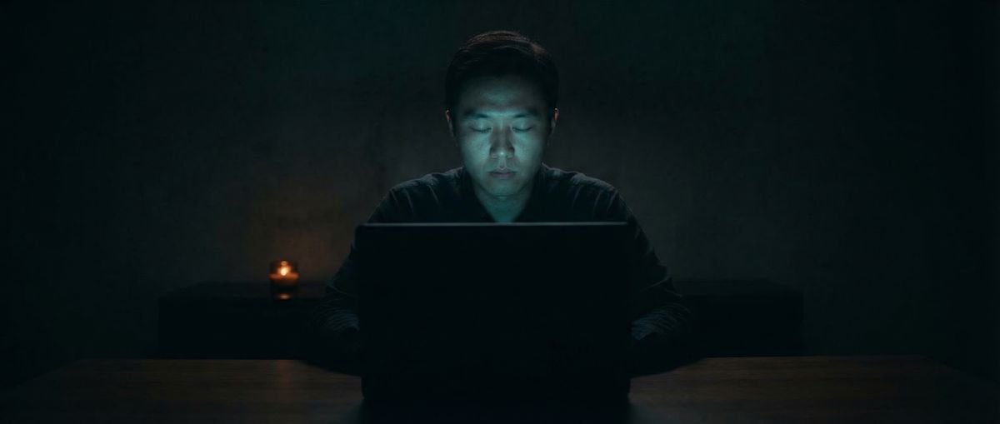

Controlled Remote Viewing (CRV) is a structured mental discipline for accessing information about targets — locations, objects, events, people — using only anomalous cognition. Unlike pop-culture depictions of psychic ability as a lightning bolt of spontaneous vision, CRV is methodical, teachable, and governed by a specific protocol developed through two decades of funded government research.
Understanding what CRV actually is — and isn't — is the first step toward training it effectively.
CRV vs. Spontaneous Remote Viewing
Most people who discover they have anomalous perceptual experiences — vivid dreams that come true, sudden knowledge of distant events, inexplicable impressions about people — are experiencing what researchers call spontaneous remote viewing. It's real, it's documented, and it's essentially uncontrollable.
The limitation of spontaneous RV is obvious: you can't schedule it, you can't direct it at a specific target, and you can't verify its accuracy without extensive journaling and correlation. For intelligence applications — and for training purposes — spontaneous RV is nearly useless.
Controlled Remote Viewing was developed specifically to solve this problem. Ingo Swann's core hypothesis was that the anomalous signal is always present, but that normal conscious activity drowns it out with noise. CRV's stage structure is a systematic method for quieting the noise and isolating the signal — repeatably, on demand, against any target.
The Stage Structure of a CRV Session
A standard CRV session is conducted with paper and pen (or a structured digital interface). The viewer records impressions as they arrive, moving through stages in sequence. Advancing to a later stage before completing an earlier one contaminates the data.
Stage 1 — Initial Ideograms
The viewer's hand moves spontaneously across the paper, producing an ideogram — a reflexive mark whose shape carries encoded information about the target's gestalt. The viewer then decodes the ideogram's motion qualities (hard/soft, jagged/smooth) into basic descriptors: land, water, structure, biological life, energy.
Stage 1 is deliberately superficial. Its purpose is to establish first contact with the signal line and lock the viewer's unconscious attention on the target before analytical thinking can interfere.
Stage 2 — Sensory Data
The viewer accesses the target through the six primary sensory channels: visual (colors, luminosity, textures), auditory, olfactory, gustatory, tactile (temperatures, surface qualities), and proprioceptive (size, mass, spatial orientation). Data is written down as raw single words or short phrases — not interpreted.
A crucial technique at Stage 2 is monitoring for Analytical Overlay (AOL) — the moment the analytical mind identifies a pattern and starts narrating. "This is a beach" is AOL. "Blue, flat, warm, moving, reflective" is Stage 2 data. When AOL occurs, it is declared and set aside; the viewer returns to raw sensation.
Stage 3 — Dimensional Data
Stage 3 formalizes the spatial and dimensional properties of the target: height, width, depth, angularity versus curvature, scale relative to the human body. A simple sketch may be produced — not to depict the target, but to capture dimensional relationships that language handles poorly.
Stage 4 — Conceptual Data
In Stage 4, the viewer accesses the conceptual, emotional, and functional dimensions of the target. What is this place for? What is the emotional quality of the space? What human activity is associated with it? This is the richest phase of a session and the one most vulnerable to contamination — but also the source of operationally useful intelligence.
The Four Stages at a Glance
- Stage 1: Gestalt — basic nature (land, water, structure, biological, energetic)
- Stage 2: Sensory — raw perceptual data across all six channels
- Stage 3: Dimensional — spatial, geometric, and scale information
- Stage 4: Conceptual — function, emotion, human activity, meaning
Advanced CRV training adds Stages 5–6 for three-dimensional modeling and direct interrogation of complex targets.
Train the Protocol
Ready to try the protocol yourself? Psionic Training runs blind CRV sessions and scores your results across all four stages — Initial Impression, Sensory, Dimensional, and Conceptual.
Start Training →The Six Scoring Dimensions
After a session, the viewer's transcript is evaluated against the actual target using six standardized dimensions. This scoring system allows session quality to be quantified, tracked over time, and compared across viewers — essential for both scientific research and personal training.
- Gestalt accuracy: Did the viewer correctly identify the basic nature of the target?
- Sensory accuracy: How well did Stage 2 descriptors match the target's actual sensory properties?
- Dimensional accuracy: Did Stage 3 data correctly represent the target's spatial properties?
- Conceptual accuracy: Were Stage 4 impressions of function, emotion, or activity correct?
- Signal-to-noise ratio: What proportion of the session was on-target signal vs. analytical overlay?
- Operational utility: If this session were used for intelligence purposes, how useful would it be?
How Coordinates Work
The use of coordinates — originally geographic latitude/longitude pairs, later arbitrary random numbers — was one of Ingo Swann's most significant innovations.
The purpose of a coordinate is not to help the viewer find the target. It's to give the viewer's unconscious mind something to latch onto — a token that represents "the target" without revealing anything about what the target is. This is why the number itself is irrelevant. A target can be assigned a coordinate of 37.22 / -115.81 or simply 4429-8873. As long as the monitor knows which coordinate corresponds to which target, the system works.
This counterintuitive design is precisely what makes CRV defensible as science. Because the viewer has zero information about the target — not its location, category, size, or nature — any accurate data they produce cannot be explained by normal inference, logical guessing, or sensory leakage. The coordinate is, effectively, a double-blind mechanism.
Training Methodology
CRV is trainable by nearly anyone. The Fort Meade operational program's experience — and subsequent civilian instruction — has consistently shown that viewers with no prior history of anomalous experience can develop functional CRV ability within weeks of structured practice.
Effective training follows a specific progression:
- Stage 1 only sessions (weeks 1–3): Develop the ideogram reflex. Learn to recognize and declare AOL immediately. Build trust in first-contact impressions.
- Stage 1–2 sessions (weeks 4–8): Add sensory data collection. Learn the six sensory channels. Track which channels are strongest for your perceptual style.
- Full Stage 1–4 sessions (week 9+): Complete protocol sessions against diverse target pools. Begin longitudinal tracking of accuracy metrics.
- Specialized targeting (advanced): Practice against specific target categories. Develop interrogation techniques for Stage 4.
The critical variables are feedback immediacy (how quickly the viewer learns what the target actually was) and target pool quality (diverse, unambiguous targets that allow clean scoring). These are the two things most informal RV practice gets wrong — and the two things that the CIA's own 1986 training manual emphasized most heavily. For a comparison of modern tools that address these requirements, see our guide to remote viewing training apps.

Ready to experience the protocol yourself? Psionic Training is the only AI-scored CRV training app built on the declassified STARGATE methodology.
Begin Training →